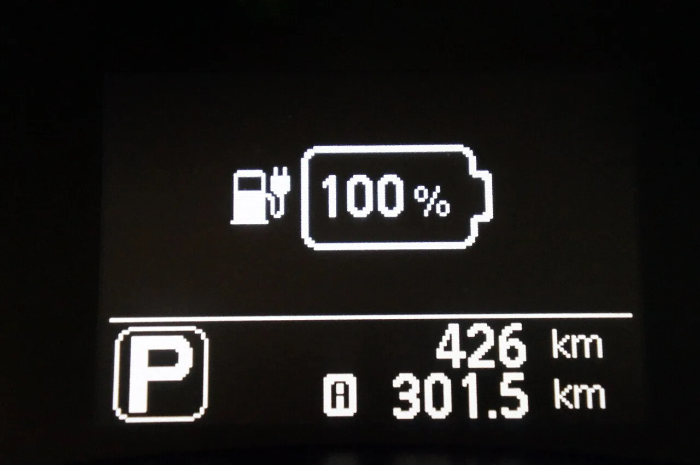
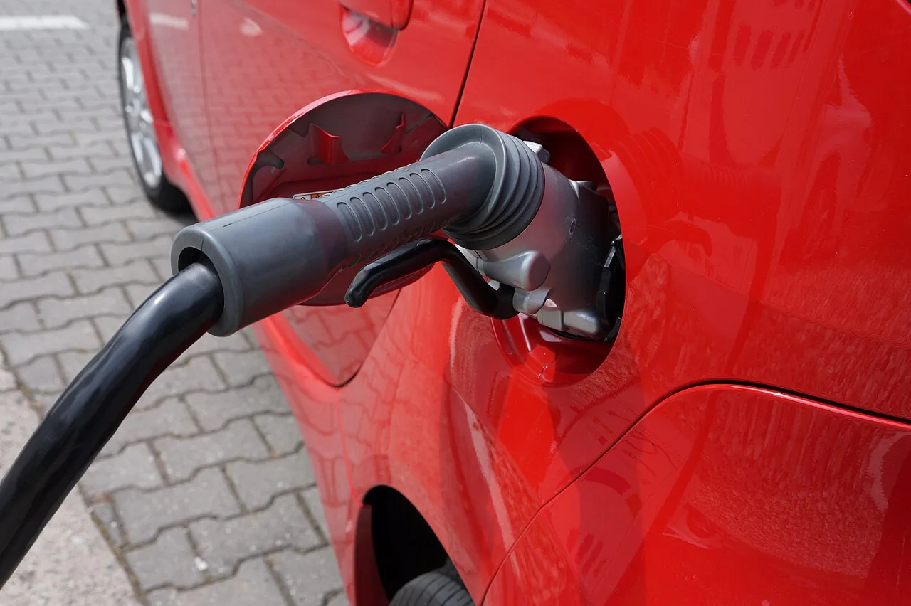
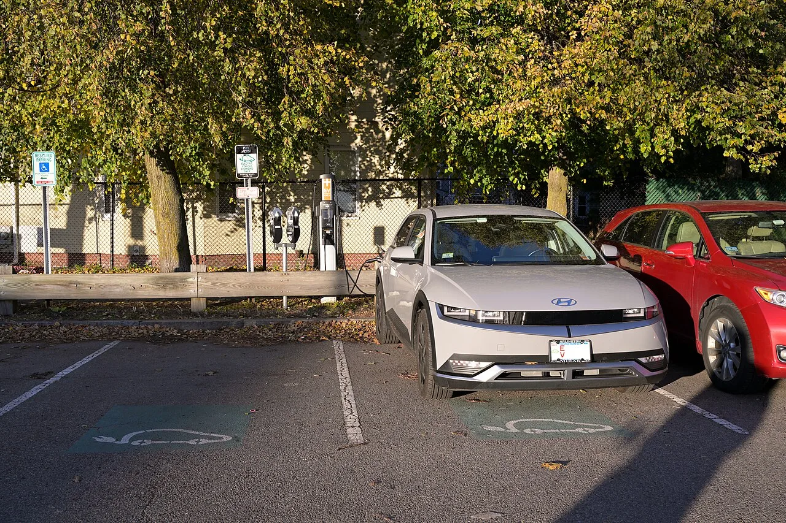
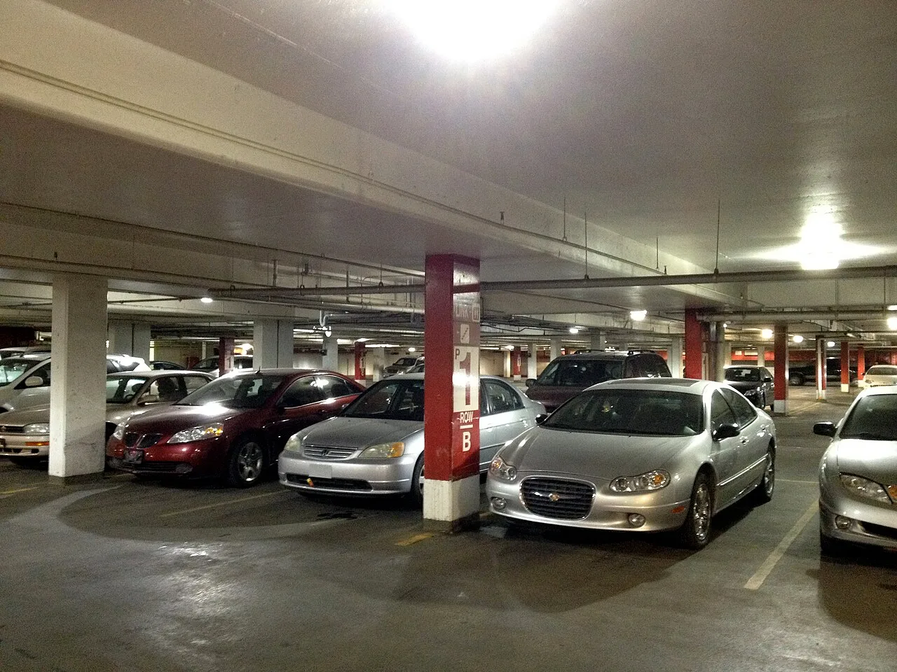

▲ 완충 자체는 문제가 아니지만, 100% 상태로 오래 방치하면 배터리 열화가 빨라진다 ⓒ Wikimedia Commons
퇴근하고 집에 도착해 충전기를 꽂고, 100%까지 채운 다음 며칠째 그대로 세워둔 적 있을 것이다.
당장 문제가 생기는 건 아니다. 하지만 이 습관이 반복되면 배터리 수명이 눈에 띄게 줄어들 수 있다는 게 배터리 전문가들의 공통된 설명이다.
완충 자체가 나쁜 게 아니다. 완충 상태로 '방치'하는 시간이 핵심이다. 리튬이온 배터리가 왜 이런 특성을 갖는지, 권장 충전 범위는 어디까지인지, 제조사 배터리 보증과는 어떤 관계가 있는지 짚어봤다.
1. 리튬이온 배터리, 왜 100%에서 더 빨리 늙나 — 열화의 원리
전기차 배터리 내부에는 SEI(Solid Electrolyte Interphase)라는 얇은 막이 존재한다. 음극 표면에서 리튬이온과 전해액 성분이 반응해 자연스럽게 형성되는 고체막으로, 배터리의 수명과 안전성을 지탱하는 핵심 구조다.
| 상태 | 내부에서 일어나는 일 |
|---|---|
| 중간 SOC (20~80%) | 전극 전압이 상대적으로 안정적 — SEI층 부반응이 적음 |
| 고전압(완충, 100%) | 양극 전위가 높아져 전해질 산화·분해 반응이 활발 — SEI층이 두꺼워지고 불안정해짐 |
| 완충 + 장시간 방치 | 고전압 상태가 오래 유지되며 부반응이 누적 — 가용 용량(실제 주행거리) 감소 |
| 완전 방전(0% 근접) | 전극 구조가 불안정해질 수 있어 완충만큼이나 피해야 하는 상태 |
즉, 배터리 열화는 '충전을 얼마나 자주 했는가'보다 '얼마나 높은 전압 상태로 얼마나 오래 있었는가'에 더 민감하게 반응한다. 완충 직후 바로 주행을 시작하면 고전압 상태가 짧게 끝나지만, 방치하면 그 시간이 길어진다.
📍 온도가 더해지면 열화가 가속된다
배터리 연구 문헌에 따르면 SEI층은 대체로 60~90℃ 구간부터 분해 반응이 나타나기 시작하는 것으로 보고된다(연구마다 배터리 화학 조성에 따라 편차 있음). 여름철 뜨거운 실외에 완충 상태로 세워두면 차량 내부·배터리팩 온도가 이 구간에 근접할 수 있어 고전압 + 고온 조건이 겹쳐 열화가 더 빠르게 진행될 수 있다. 겨울보다 여름에 더 조심해야 하는 이유다.

▲ 급속충전은 배터리 온도를 빠르게 끌어올려 완속충전보다 열화에 더 민감하다 ⓒ Wikimedia Commons
2. 완충 자체는 죄가 없다 — '방치'가 문제인 이유
내일 아침 장거리 운행을 위해 전날 밤 100%까지 충전해두는 것 자체를 두려워할 필요는 없다. 완충과 완충 방치는 완전히 다른 이야기다.
✅ 완충이 괜찮은 경우 vs 문제가 되는 경우
· 괜찮음 — 장거리 주행 전날 완충 후 다음 날 바로 출발
· 괜찮음 — 완충 후 몇 시간 내 정상적으로 운행
· 문제 — 완충 상태로 3일 이상 주차장에 방치
· 문제 — 매일 습관적으로 100%까지 채워두고 필요 이상으로 오래 세워둠
· 문제 — 완충 상태로 뜨거운 여름 실외에 장기 주차
바꿔 말하면, 매일 타는 차라면 100% 충전을 걱정할 이유가 크지 않다. 완충 후 방치 시간이 짧기 때문이다. 문제는 차를 며칠 이상 세워둘 예정인데 습관적으로 완충해버리는 경우다.
3. 일상 주행 권장 충전 범위 — 왜 20~80%인가
배터리 업계와 전기차 제조사가 공통적으로 권장하는 범위는 20~80%다. 완전 방전과 완충이라는 두 극단을 모두 피하는 구간이다.
| 상황 | 권장 충전량 | 비고 |
|---|---|---|
| 평소 일상 주행 | 70~80% | 출퇴근·근거리 위주라면 매번 완충할 필요 없음 |
| 장거리 주행 전날 | 90~100% | 충전 후 가능한 빨리 출발하는 것이 이상적 |
| 배터리 잔량 하한선 | 20% 전후 | 완전 방전(0%)까지 내려가는 습관은 피할 것 |
| 장기 주차(1주 이상) | 40~60% | 완충·완방 모두 아닌 중간값 유지 |
일부 전기차는 충전 목표치(90% 또는 80% 등)를 차량이나 앱에서 직접 설정할 수 있는 기능을 제공한다. 매일 타는 차라면 이 기능으로 충전 상한선을 80% 근처로 걸어두는 것도 방법이다.
📍 충전 범위에 따른 수명 차이, 숫자로 보면
NMC(니켈·망간·코발트) 계열 리튬이온 셀을 대상으로 한 실험실 사이클 테스트에서는, 0~100%(완방·완충)로 반복 사용할 경우 용량이 80% 수준으로 떨어지기까지 약 430사이클이 걸린 반면, 20~80% 구간만 오가며 사용하면 같은 수준(80%)에 도달하기까지 약 1,800사이클이 걸렸다는 결과가 보고된 바 있다. 실차 배터리팩은 셀 구성과 열관리 방식에 따라 차이가 있지만, 충전 폭을 좁게 유지할수록 사이클 수명이 크게 늘어난다는 방향성은 동일하다.

▲ 매일 타는 차라면 매번 100%까지 채우기보다 70~80% 선에서 충전을 마치는 것이 배터리에 유리하다 ⓒ Wikimedia Commons
📍 급속충전도 완충 직전 구간에서 느려지는 이유
급속충전이 80% 근처부터 눈에 띄게 느려지는 것도 같은 원리다. 충전 곡선상 80% 이후부터는 배터리 보호를 위해 충전 전류를 의도적으로 줄이도록 제어된다. 그래서 "10분이면 80% 찼는데 그다음부터 한참 걸린다"는 경험을 하게 된다 — 이는 배터리를 보호하기 위한 정상적인 설계다.
4. 장기 주차 시 권장 충전량 — 여행·군입대·장기 출장 전 체크리스트
1주일 이상 차를 세워둘 계획이라면 충전량을 미리 조정해두는 것이 좋다. 완충 상태로 오래 두는 것도, 완전 방전 상태로 두는 것도 피해야 한다.
✅ 장기 주차 전 점검할 것
· 출발 전 배터리 잔량을 40~60% 수준으로 맞춰둘 것
· 완전히 방전된 상태로 장기간 방치하면 재충전이 어려워지거나 배터리 손상으로 이어질 수 있음
· 가능하면 실내 주차장, 그늘 등 온도 변화가 적은 곳에 세워둘 것
· 스마트폰 앱으로 원격 배터리 잔량을 주기적으로 확인할 수 있다면 활용할 것
· 한 달 이상 장기간이라면 중간에 한 번 충전 상태를 점검·보충하는 것이 안전

▲ 장기간 세워둘 차라면 완충이 아니라 40~60% 수준의 잔량으로 맞춰두는 것이 권장된다 ⓒ Wikimedia Commons
5. 제조사 배터리 보증과의 관계 — 완충 방치가 보증을 깎을 수 있나
현대차·기아는 전기차 배터리에 대해 8년 또는 16만km, 배터리 성능이 70% 이하로 저하될 경우 무상 교체·수리를 보장하는 보증을 제공한다. 국내 다른 제조사들도 대체로 이와 유사한 수준의 보증을 운영한다.
| 구분 | 내용 |
|---|---|
| 보증 기간 | 8년 또는 16만km 중 먼저 도달하는 시점까지 |
| 보증 기준 | 정상 사용 중 배터리 성능이 70% 이하로 저하될 경우 무상 교체·수리 |
| 보증 제외 가능성 | 사고·개조, 비정상적인 사용·관리 소홀로 인한 열화는 판정 시 쟁점이 될 수 있음 |
📍 일상적인 완충 습관만으로 보증이 깨지지는 않는다
다만 주의할 점이 있다. 이따금 완충하는 습관 자체가 보증을 무효화시키는 것은 아니다. 보증은 배터리 성능 저하 여부(70% 기준)로 판정되는 것이 원칙이며, 정상적인 사용 범위 내의 충전 습관은 보증 대상에서 배제되지 않는다. 다만 과도한 급속충전 반복이나 명백한 관리 소홀이 확인되는 극단적 사례에서는 판정 과정에서 쟁점이 될 수 있다는 점은 참고할 필요가 있다.
본인 차량의 정확한 보증 조건과 대상은 제조사 공식 안내에서 확인하는 것이 정확하다. 현대차 보증기간 안내 바로가기
결국 보증과 무관하게도 완충 방치를 피하는 습관은 남는 이득이 크다. 보증 기준(70%)에 도달하기 전이라도, 열화가 느릴수록 실제 주행거리와 재판매 가치 모두에 유리하기 때문이다.
6. 요약
전기차 배터리를 100%까지 충전하는 것 자체는 문제가 아니다. 문제는 완충 상태로 오래 방치하는 것이다. 고전압 상태가 길게 유지되면 SEI층 부반응이 누적돼 배터리 열화가 빨라진다.
일상 주행에서는 20~80%(또는 70~80%) 구간을 유지하고, 장거리 주행 전날에만 완충한 뒤 바로 출발하는 것이 이상적이다. 1주일 이상 차를 세워둘 계획이라면 40~60% 수준으로 잔량을 맞춰두는 것이 권장된다.
현대차·기아 등 국내 제조사는 8년/16만km, 배터리 성능 70% 이하 기준으로 보증을 운영한다. 일상적인 완충 습관 자체가 보증을 무효화하지는 않지만, 완충 방치를 피하는 습관은 배터리 수명과 실제 주행거리 모두에 이득이 된다.